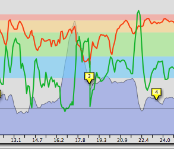
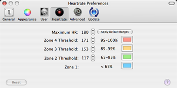

Setting and Displaying Heartrate Zones
Ascent can display heart rate zones in the Activity View, and also indicates the current zone by displaying colored bars in the heads-up displays.
To enable heart rate zones in the Activity View, open the settings drawer by clicking the disclosure triangle in the lower left corner of the window, and then check "Show Heart rate Zones".

You can set the range of each zone in Ascent's preferences, as well as the color used for each zone in Ascent's displays. Go to "Preferences/Heart rate" and enter your max heart rate and push the "Apply Default Ranges" button to get default zone settings for your max. You can then further tweak each zone as desired.
